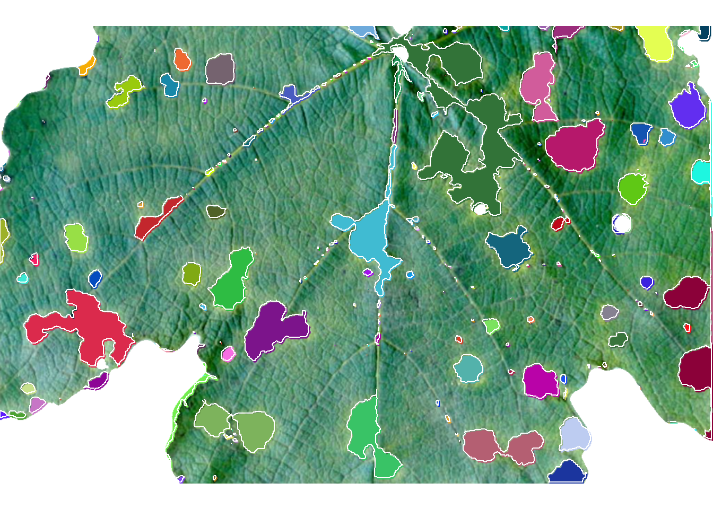

setwd("E:/Desktop/UFSC/cursos/pliman_tut/imgs")Phytopathometry
1 Directory
2 Disease severity
3 Using image indexes
The following image1 shows symptoms of anthracnose (Elsinoë ampelina) on grape leaves.
library(pliman)
library(tidyverse)
img <- image_import("videira.png", plot = TRUE)sev <-
measure_disease(img,
index_lb = "G",
index_dh = "G-R",
show_segmentation = TRUE)
sev$severity healthy symptomatic
1 83.31858 16.681424 Using sample palettes
Sample palettes can be made by simply manually sampling small areas of representative images and producing a composite image that will represent each of the desired classes (background, healthy, and symptomatic tissues).
h <- image_import("videira_h.png")
d <- image_import("videira_d.png")
b <- image_import("videira_b.png")
image_combine(img, h, d, b, ncol = 4)
4.1 Producing sample palettes
Users can produce these palettes with pick_palette() function.
h2 <- pick_palette(img)
d2 <- pick_palette(img)
b2 <- pick_palette(img)
image_combine(h2, d2, b2, ncol = 3)4.1.1 Defaults settings
sev <-
measure_disease(img = img,
img_healthy = h,
img_symptoms = d,
img_background = b)sev$severity healthy symptomatic
1 85.309 14.6914.1.2 Filling lesions
sev <-
measure_disease(img = img,
img_healthy = h,
img_symptoms = d,
img_background = b,
show_contour = FALSE)4.1.3 Showing a mask
sev <-
measure_disease(img = img,
img_healthy = h,
img_symptoms = d,
img_background = b,
show_original = FALSE,
col_lesions = "brown") # default is "black"4.1.4 Segmenting and analyzing lesions
When using show_features = TRUE, the function analyzes the lesions and returns results such as number of lesions, area, perimeter, etc. With show_segmentation = TRUE, segmented lesions are shown.
sev <-
measure_disease(img = img,
img_healthy = h,
img_symptoms = d,
img_background = b,
show_features = TRUE,
watershed = TRUE,
show_segmentation = TRUE)# correct the measures (dpi = 150)
sev_corrected <- get_measures(sev, dpi = 150)5 Batch processing
To analyze several images from a directory, use the pattern argument to declare a pattern of filenames. Here, we Will used 50 soybean leaves available in the repository https://osf.io/4hbr6, a database of images of annotation of severity of plant diseases. Thanks to Emerson M. Del Ponte and his contributors for keeping this project publicly available. Using the save_image = TRUE argument we save the processed images in a temporary directory, defined by tempdir().
# criar um diretório temporário
temp_dir <- tempdir()
system.time(
sev_lote <-
measure_disease(pattern = "soy",
img_healthy = "soja_h",
img_symptoms = "soja_s",
img_background = "soja_b",
plot = FALSE,
save_image = TRUE,
dir_processed = temp_dir,
show_contour = FALSE,
col_lesions = "brown")
)Processing image soy_1 |= | 2% 00:00:00 Processing image soy_10 |== | 4% 00:00:03 Processing image soy_11 |== | 6% 00:00:06 Processing image soy_12 |=== | 8% 00:00:08 Processing image soy_13 |==== | 10% 00:00:11 Processing image soy_14 |===== | 12% 00:00:13 Processing image soy_15 |====== | 14% 00:00:15 Processing image soy_16 |====== | 16% 00:00:16 Processing image soy_17 |======= | 18% 00:00:19 Processing image soy_18 |======== | 20% 00:00:21 Processing image soy_19 |========= | 22% 00:00:24 Processing image soy_2 |========== | 24% 00:00:26 Processing image soy_20 |========== | 26% 00:00:27 Processing image soy_21 |=========== | 28% 00:00:30 Processing image soy_22 |============ | 30% 00:00:32 Processing image soy_23 |============= | 32% 00:00:33 Processing image soy_24 |============== | 34% 00:00:34 Processing image soy_25 |============== | 36% 00:00:38 Processing image soy_26 |=============== | 38% 00:00:40 Processing image soy_27 |================ | 40% 00:00:42 Processing image soy_28 |================= | 42% 00:00:45 Processing image soy_29 |================== | 44% 00:00:48 Processing image soy_3 |=================== | 46% 00:00:50 Processing image soy_30 |=================== | 48% 00:00:52 Processing image soy_31 |==================== | 50% 00:00:53 Processing image soy_32 |===================== | 52% 00:00:54 Processing image soy_33 |====================== | 54% 00:00:56 Processing image soy_34 |====================== | 56% 00:00:59 Processing image soy_35 |======================= | 58% 00:01:01 Processing image soy_36 |======================== | 60% 00:01:03 Processing image soy_37 |========================= | 62% 00:01:05 Processing image soy_38 |========================== | 64% 00:01:07 Processing image soy_39 |========================== | 66% 00:01:08 Processing image soy_4 |============================ | 68% 00:01:11 Processing image soy_40 |============================ | 70% 00:01:12 Processing image soy_41 |============================= | 72% 00:01:13 Processing image soy_42 |============================== | 74% 00:01:16 Processing image soy_43 |============================== | 76% 00:01:18 Processing image soy_44 |=============================== | 78% 00:01:19 Processing image soy_45 |================================ | 80% 00:01:22 Processing image soy_46 |================================= | 82% 00:01:24 Processing image soy_47 |================================== | 84% 00:01:26 Processing image soy_48 |================================== | 86% 00:01:27 Processing image soy_49 |=================================== | 88% 00:01:29 Processing image soy_5 |===================================== | 90% 00:01:31 Processing image soy_50 |===================================== | 92% 00:01:32 Processing image soy_6 |======================================= | 94% 00:01:35 Processing image soy_7 |======================================= | 96% 00:01:36 Processing image soy_8 |======================================== | 98% 00:01:37 Processing image soy_9 |=========================================| 100% 00:01:39 usuário sistema decorrido
80.78 9.00 101.32 sev_lote$severity img healthy symptomatic
1 soy_1 92.77348 7.2265174
2 soy_10 52.30633 47.6936705
3 soy_11 89.78384 10.2161575
4 soy_12 65.11670 34.8832993
5 soy_13 52.36539 47.6346092
6 soy_14 99.69690 0.3030963
7 soy_15 70.29044 29.7095575
8 soy_16 29.90606 70.0939369
9 soy_17 21.09925 78.9007548
10 soy_18 81.65725 18.3427485
11 soy_19 39.64060 60.3594041
12 soy_2 85.72200 14.2780038
13 soy_20 33.87098 66.1290170
14 soy_21 33.93214 66.0678631
15 soy_22 75.95096 24.0490393
16 soy_23 59.72758 40.2724205
17 soy_24 73.65542 26.3445771
18 soy_25 10.48656 89.5134444
19 soy_26 30.90999 69.0900129
20 soy_27 33.49553 66.5044714
21 soy_28 53.91191 46.0880904
22 soy_29 24.22248 75.7775163
23 soy_3 17.13340 82.8666047
24 soy_30 43.95521 56.0447894
25 soy_31 13.53385 86.4661545
26 soy_32 45.77103 54.2289682
27 soy_33 89.78882 10.2111778
28 soy_34 47.46044 52.5395591
29 soy_35 60.80857 39.1914277
30 soy_36 94.80937 5.1906344
31 soy_37 35.32374 64.6762642
32 soy_38 54.41359 45.5864088
33 soy_39 40.33488 59.6651237
34 soy_4 66.71393 33.2860690
35 soy_40 66.74647 33.2535340
36 soy_41 97.03763 2.9623742
37 soy_42 87.26385 12.7361490
38 soy_43 90.78369 9.2163109
39 soy_44 58.44983 41.5501685
40 soy_45 84.39995 15.6000476
41 soy_46 83.73092 16.2690840
42 soy_47 78.28876 21.7112445
43 soy_48 74.91738 25.0826239
44 soy_49 70.59905 29.4009499
45 soy_5 79.95357 20.0464273
46 soy_50 56.30231 43.6976924
47 soy_6 64.58105 35.4189485
48 soy_7 58.76635 41.2336531
49 soy_8 45.32267 54.6773292
50 soy_9 80.82006 19.17994466 Standard area diagrams
Standard area diagrams (SAD) have long been used as a tool to aid the estimation of plant disease severity, serving as a standard reference template before or during the assessments. Given an object computed with measure_disease() a Standard Area Diagram (SAD) with n images containing the respective severity values are obtained with sad().
Leaves with the smallest and highest severity will always be in the SAD. If n = 1, the leaf with the smallest severity will be returned. The others are sampled sequentially to achieve the n images after severity has been ordered in ascending order. For example, if there are 30 leaves and n is set to 3, the leaves sampled will be the 1st, 15th, and 30th with the smallest severity values.
The SAD can be only computed if an image pattern name is used in argument pattern of measure_disease(). If the images are saved, the n images will be retrevied from dir_processed directory. Otherwise, the severity will be computed again to generate the images. A SAD with 8 images from the above example can be obtained easely with:
sad(sev_lote, n = 9, ncol = 3) img healthy symptomatic rank
6 soy_14 99.69690 0.3030963 1
3 soy_11 89.78384 10.2161575 7
50 soy_9 80.82006 19.1799446 13
44 soy_49 70.59905 29.4009499 19
29 soy_35 60.80857 39.1914277 25
21 soy_28 53.91191 46.0880904 31
24 soy_30 43.95521 56.0447894 37
20 soy_27 33.49553 66.5044714 43
18 soy_25 10.48656 89.5134444 507 Parallel processing
To speed up processing time when multiple images are available, you can use the paralell argument. In parallel programming (parallel = TRUE), the images are processed asynchronously (in parallel) in separate R sessions running in the background on the same machine. The number of sections is set by default to 50% of available cores. This number can be controlled explicitly with the argument workers.
system.time(
sev_lote <-
measure_disease(pattern = "soy",
img_healthy = "soja_h",
img_symptoms = "soja_s",
img_background = "soja_b",
plot = FALSE,
parallel = TRUE)
)Image processing using multiple sessions (6). Please wait. usuário sistema decorrido
0.58 0.16 63.74 8 Multiple images of the same sample
If users need to analyze multiple images from the same sample, the images from the same sample must share the same filename prefix, which is defined as the part of the filename that precedes the first hyphen (-) or underscore (_).
In the following example, 16 images will be used as examples. Here, they represent four replicates of four different treatments (TRAT1_1, TRAT1_2, ..., TRAT4_4). Note that to ensure that all images are processed, all images must share a common pattern, in this case ("TRAT").
system.time(
sev_trats <-
measure_disease(pattern = "TRAT",
img_healthy = "feijao_h",
img_symptoms = "feijao_s",
img_background = "feijao_b",
show_features = TRUE,
plot = FALSE,
parallel = TRUE)
)Image processing using multiple sessions (6). Please wait. usuário sistema decorrido
0.37 0.11 40.99 sev <-
sev_trats$severity |>
separate_col(img, into = c("TRAT", "REP"))
ggplot(sev, aes(TRAT, symptomatic))+
geom_boxplot() +
geom_jitter(alpha = 0.3) +
labs(x = "Tratamentos",
y = "Severidade (%)")9 Multiple leaves in one image
9.1 Segment by color
When multiple leaves are present in an image, the measure_disease function returns the average severity of the leaves present in the image. To quantify the severity per leaf, the measure_disease_byl() function can be used.
This function computes the percentage of symptomatic leaf area using color palettes or RGB indices for each leaf (byl) of an image. This allows, for example, to process replicates of the same treatment and obtain the results of each replication with a single image. To do this, the sample sheets are first split using the object_split() function and then the measure_disease() function is applied to the sheet list.
byl <-
measure_disease_byl(pattern = "multiplas_02",
index = "B", # used to segment leaves from background
img_healthy = "soja_h",
img_symptoms = "soja_s",
show_contour = FALSE,
show_features = TRUE,
col_lesions = "red",
parallel = TRUE)Image processing using multiple sessions (6). Please wait.results_byl <- get_measures(byl)
results_byl$results |>
head() img leaf id mx my area perimeter radius_mean radius_min
1 multiplas_02 1 1 171.2667 80.32549 62 40.97056 4.90362 1.09451
2 multiplas_02 1 2 236.4953 102.94576 520 126.39697 13.72704 2.64672
3 multiplas_02 1 3 135.8283 100.38182 100 36.55635 5.21944 3.54338
4 multiplas_02 1 4 196.3157 128.99638 1196 209.65180 19.48381 5.27639
5 multiplas_02 1 6 155.3493 129.39204 397 121.81118 10.88886 1.10118
6 multiplas_02 1 8 219.5256 115.18590 39 26.31371 2.98820 0.95833
radius_max radius_sd diam_mean diam_min diam_max maj_axis min_axis length
1 8.89021 2.30936 9.80723 2.18902 17.78042 5.18036 1.54865 16.46903
2 23.92081 5.14020 27.45408 5.29344 47.84162 13.16349 6.42927 43.98674
3 6.87184 0.99468 10.43889 7.08676 13.74369 4.32261 3.08497 13.15289
4 31.61094 7.09368 38.96762 10.55278 63.22188 17.41109 11.24782 60.57374
5 19.01536 4.12090 21.77773 2.20237 38.03073 9.58203 6.60092 33.93652
6 4.49092 0.90059 5.97640 1.91667 8.98185 2.37612 2.01511 8.22970
width
1 5.75413
2 22.97408
3 8.67840
4 41.21600
5 24.09180
6 6.020569.2 Segment by shape
img <- image_import("disease_shp.jpg", plot = TRUE)
byl2 <-
measure_disease_shp(img,
filter = 10,
ncol = 3,
nrow = 3,
index_lb = "HUE2",
index_dh = "NGRDI",
threshold = c("Otsu", 0),
plot = FALSE)
plot(img)
plot(byl2$shapefiles)
plot_measures(byl2, measure = "symptomatic")10 Interactive disease measurements
An alternative approach to measuring disease percentage is available through the measure_disease_iter() function. This function offers an interactive interface that empowers users to manually select sample colors directly from the image. By doing so, it provides a highly customizable analysis method.
One advantage of using measure_disease_iter() is the ability to utilize the “mapview” viewer, which enhances the analysis process by offering zoom-in options. This feature allows users to closely examine specific areas of the image, enabling detailed inspection and accurate disease measurement.
img <- image_pliman("sev_leaf.jpg", plot = TRUE)
measure_disease_iter(img, viewer = "mapview")
11 More than two classes
img <- image_pliman("sev_leaf.jpg")
image_segment_iter(img,
nseg = 3,
index = c("B", "NGRDI", "G-B"),
ncol = 4) image pixels percent
1 original 818790 100.00000
2 seg1 462912 56.53611
3 seg2 89493 19.33262
4 seg3 27750 31.0080112 A little gift
fungo <- image_import("fungo.jpeg", plot = TRUE)
res <-
analyze_objects(fungo,
index = "HUE",
invert = TRUE,
filter = 5,
watershed = FALSE,
contour_size = 6)
get_measures(res, dpi = 90) |>
plot_measures(measure = "area",
col = "black",
size = 2)
Tip
The segmentation can also be performed using sample palettes representing the foreground and background. In this example, pick the color samples, then use them in the analyze_objects().
back <- pick_palette(fungo)
fore <- pick_palette(fungo)
res <-
analyze_objects(fungo,
background = back,
foreground = fore,
watershed = FALSE,
filter = 5,
contour_size = 6)
meas <- get_measures(res, dpi = 90)
plot_measures(meas,
col = "black",
measure = "area",
size = 2)